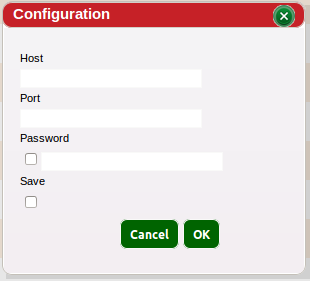

The Remote File System Tab allows for connections to Remote File Systems so that files can be transfered from the remote server to either another remote server or HDFS
To create a new connection while the tab is selected the button and a new window should appear that allows for adding a new Remote Server Connection by providing the hostname, port and selecting if the connection is to be saved.

Once the connection has been established, the tab should now display a list of items in the remote server . To copy an item, drag it and drop it to the Hadoop File System
return to Red Sqirl help